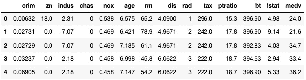

第四章:训练机器学习模型
在前一章中，您学习了亚马逊 SageMaker Autopilot 如何轻松地自动构建、训练和优化模型，而无需编写一行机器学习代码。
对于 SageMaker Autopilot 不支持的问题类型，下一个最佳选择是使用 SageMaker 中已经实现的算法之一，并在您的数据集上对其进行训练。这些算法被称为内置算法，它们涵盖了许多典型的机器学习问题，从分类到时间序列再到异常检测。
在本章中，您将了解用于监督和非监督学习的内置算法，使用它们可以解决什么类型的问题，以及如何将它们与 SageMaker SDK 一起使用:
- 发现 Amazon SageMaker 中的内置算法
- 使用内置算法训练和部署模型
- 使用带有内置算法的 SageMaker SDK
- 使用更多内置算法
技术要求
您将需要一个 AWS 帐户来运行本章中包含的示例。如果您还没有，请将浏览器指向https://aws.amazon.com/getting-started/来创建一个。您还应该熟悉 AWS 免费层(https://aws.amazon.com/free/)，它允许您在一定的使用限制内免费使用许多 AWS 服务。
您需要为您的帐户(https://aws.amazon.com/cli/)安装和配置 AWS 命令行界面(CLI)。
您将需要一个工作的 Python 3.x 环境。安装 Anaconda 发行版(https://www.anaconda.com/)不是强制性的，但是强烈建议安装，因为它包含了我们将需要的许多项目(Jupyter、pandas、numpy等等)。
书中包含的代码示例可在 GitHub 上获得，网址为https://GitHub . com/packt publishing/Learn-Amazon-sage maker-second-edition。你需要安装一个 Git 客户端来访问它们(https://git-scm.com/)。
发现亚马逊 SageMaker 中的内置算法
内置算法是由亚马逊(https://docs.aws.amazon.com/sagemaker/latest/dg/algos.html)实现的，在某些情况下是发明的机器学习算法。他们让你快速训练和部署你自己的模型，而不用写一行机器学习代码。的确，既然训练和预测代码唾手可得，你就不必担心实现它，你可以专注于手头的机器学习问题。和往常一样，SageMaker 的基础设施得到了全面管理，为您节省了更多时间。
在本节中，您将了解传统机器学习问题的内置算法。计算机视觉和自然语言处理的算法将在接下来的两章中讨论。
监督学习
- 线性学习器构建线性模型来解决回归问题，正如以及分类问题(二元或多类)。
- 因式分解机器构建线性模型来解决回归问题，以及分类问题(二元或多类)。因式分解机器是线性模型的推广，它们非常适合高维、稀疏的数据集，例如推荐问题中的用户-项目交互矩阵。
- K-最近邻 ( KNN )为回归和分类问题建立非参数模型。
- XGBoost 为回归、分类和排序问题建立模型。XGBoost 可能是目前使用最广泛的机器学习算法，SageMaker 使用在 https://github.com/dmlc/xgboost可用的开源实现。
- DeepAR 为多元时间序列建立预测模型。DeepAR 是亚马逊发明的基于递归神经网络的算法，你可以在https://arxiv.org/abs/1704.04110了解更多信息。
- Object2Vec 从通用高维对象中学习低维嵌入。Object2Vec 是亚马逊发明的算法。
- BlazingText 建立文本分类模型。这种算法是亚马逊发明的，你可以在 https://dl.acm.org/doi/10.1145/3146347.3146354 了解更多。
无监督学习
无监督的学习不需要带标签的数据集，并且包括聚类或异常检测等问题:
- K-means 建立聚类模型。SageMaker 使用了网络规模 k-means 聚类算法的修改版本(https://www.eecs.tufts.edu/~dsculley/papers/fastkmeans.pdf)。
- 主成分分析 ( PCA )建立降维模型。
- 随机砍伐森林建立异常检测模型。
- IP Insights 构建模型来识别 IPv4 地址的使用模式。这对于监控、网络安全等等很方便。
- BlazingText 计算单词向量，这是自然语言处理任务的一种非常有用的表示。
我们将在本章的剩余部分详细讨论这些算法。
关于可扩展性的一句话
在我们开始用算法训练和部署模型之前，你可能想知道为什么你应该使用它们而不是它们在众所周知的库中的对应物，比如scikit-learn和R。
首先，这些算法是由亚马逊团队实现和调整的，他们并不是机器学习的新手！已经投入了大量的努力来确保这些算法在 AWS 基础设施上尽可能快地运行，不管你使用什么类型的实例。此外，这些算法中的许多都支持开箱即用的分布式训练，允许您在一个完全托管的实例集群中分割模型训练。
由于这一点，基准测试表明，这些算法通常比竞争对手的实现要好 10 倍。在许多情况下，它们也更具成本效益。您可以通过以下网址了解更多信息:
- 2018 年 AWS 特拉维夫峰会:通过内置算法加快您的机器学习工作流程:https://www.youtube.com/watch?v=IeIUr78OrE0
- 亚马逊的弹性机器学习算法，Liberty 等人，SIGMOD ' 20:sage maker:https://www . Amazon . science/publications/Elastic-Machine-Learning-Algorithms-in-Amazon-sage maker
当然，这些算法受益于 SageMaker 中的所有特性，这一点你会在本书末尾发现。
使用内置算法训练和部署模型
Amazon SageMaker 让你在许多不同的配置中训练和部署模型。尽管它鼓励最佳实践，但它是一种模块化服务，让你可以用自己的方式做事情。
在这一节中，我们将首先看一个典型的端到端工作流，其中我们使用 SageMaker 从数据上传一直到模型部署。然后，我们将讨论替代工作流，以及如何挑选您需要的功能。最后，我们将深入了解一下，从基础架构的角度来看，当我们进行培训和部署时会发生什么。
了解端到端工作流程
让我们看一个典型的 SageMaker 工作流。你会在我们的例子中以及 GitHub(https://github.com/awslabs/amazon-sagemaker-examples/)上的 AWS 笔记本中再次看到它:
- 【https://developers.google.com/protocol-buffers】()。
- 配置训练作业:在这里，您可以选择想要训练的算法，设置超参数，并定义训练作业的基础设施要求。
- 启动培训作业:这是我们传递你的数据集在 S3 的位置的地方。培训在托管基础架构上进行，根据您的需求自动创建和配置。一旦训练完成，模型工件被保存在 S3。培训基础设施自动终止，您只需为您使用的内容付费。
- 部署模型:您可以在实时 HTTPS 端点上部署模型，用于实时预测或批量转换。同样，您只需要定义基础设施需求。
- 预测数据:调用实时端点或批量转换器。如您所料，这里也管理基础设施。对于生产，您还需要监控数据和预测的质量。
- 清理！:这包括关闭终端，以避免不必要的费用。
理解这个工作流程对亚马逊 SageMaker 的工作效率至关重要。幸运的是，SageMaker SDK 有与这些步骤非常匹配的简单 API，所以您不应该对使用哪一个或何时使用它感到困惑。
在我们开始研究 SDK 之前，让我们考虑一下在您的业务和技术环境中有意义的替代工作流。
使用替代工作流程
亚马逊 SageMaker 是一个模块化服务，让你按照自己的方式工作。让我们首先考虑一个工作流，在这个工作流中，您将在 SageMaker 上进行培训，并在您自己的服务器上进行部署，不管原因是什么。
导出模型
- 从 S3 下载训练神器，物化为
model.tar.gz文件。 - 提取存储在工件中的模型。
- 在您自己的服务器上，用适当的机器学习库加载模型:
fastText在https://fasttext.cc/实施。- 对于所有其他型号:使用阿帕奇 MXNet(https://mxnet.apache.org/)。
现在，让我们看看如何导入一个现有的模型并将其部署在 SageMaker 上。
导入模型
步骤同样简单:
这只是快速浏览一下。我们将在第 11 章 、部署机器学习模型中运行两个工作流的完整示例。
使用完全托管的基础设施
所有 SageMaker 的工作都是在托管的基础设施上运行的。让我们看一下引擎盖下面，看看当我们训练和部署模型时会发生什么。
Docker 容器中的打包算法
所有 SageMaker 算法必须打包在 Docker 容器中。别担心，为了使用 SageMaker，你不需要太了解 Docker。如果你对它不熟悉，我推荐你阅读这篇教程来理解关键概念和工具:https://docs.docker.com/get-started/。知道的比实际需要的多一点总是好的！
正如你所期望的，内置算法是预先打包好的，容器很容易用于训练和部署。它们托管在亚马逊弹性容器注册中心 ( ECR )，AWS 的 Docker 注册服务中心(https://aws.amazon.com/ecr/)。由于 ECR 是基于地区的服务，您将在 SageMaker 可用的每个地区找到一组容器。
你可以在https://docs . AWS . Amazon . com/sage maker/latest/DG/sage maker-algo-docker-registry-paths . html找到内置算法容器列表。例如，eu-west-1 区域中线性学习算法的容器名称是438346466558.dkr.ecr.eu-west-1.amazonaws.com/linear-learner:latest。这些容器只能被拉至 SageMaker 管理的实例，因此您将无法在本地机器上运行它们。
现在，让我们看看底层基础架构。
创建培训基础设施
当您启动一个培训任务时，SageMaker 会根据您的需求(实例类型和实例数量)启动基础设施。
一旦培训实例投入使用，它就会从 ECR 中提取适当的培训容器。超参数应用于算法，该算法还接收数据集的位置。默认情况下，该算法会从 S3 复制完整的数据集，然后开始训练。如果配置了分布式训练，SageMaker 会自动将数据集批次分发到集群中的不同实例。
一旦训练完成，模型就被打包到保存在 S3 的模型工件中。然后，训练基础设施被自动关闭。日志可以在亚马逊 CloudWatch 日志中找到。最后但并非最不重要的是，你只需支付确切的培训时间。
创建预测基础设施
当您启动一个部署作业时，SageMaker 会根据您的需求再次创建基础设施。
现在让我们关注实时端点，而不是批量转换。
一旦一个端点实例投入使用，它将从 ECR 中提取适当的预测容器，并从 S3 加载您的模型。然后，HTTPS 端点被调配，并在几分钟内准备好进行预测。
如果您为端点配置了多个实例，负载平衡和高可用性会自动设置。如果您配置了自动缩放，这同样适用。
如您所料，端点会一直保持运行，直到被显式删除，无论是在 AWS 控制台中还是通过 SageMaker API 调用。在此期间，您将被收取端点费用，因此请务必删除您不需要的端点！
既然我们已经了解了全局，让我们开始看看 SageMaker SDK，以及我们如何使用它来训练和部署模型。
使用带有内置算法的 SageMaker SDK
熟悉 SageMaker SDK 对于充分利用 SageMaker 非常重要。你可以在https://sagemaker . readthedocs . io找到它的文档。
完成一个简单的例子是最好的开始方式。在本节中，我们将使用线性学习器算法在波士顿住房数据集(https://www.kaggle.com/c/boston-housing)上训练一个回归模型。我们会慢慢来，不遗余力。同样，这些概念是必不可少的，所以请慢慢来，并确保你完全理解每一步。
催单
我建议您跟随并运行配套的 GitHub 资源库中的代码。我们已经尽了最大努力来检查文本中出现的所有代码示例。然而，对于那些有电子版的人来说，复制和粘贴可能会产生不可预知的结果:格式问题、奇怪的引用等等。
准备数据
内置算法期望数据集是某种格式，比如 CSV 、 protobuf 或者 libsvm 。算法文档中列出了支持的格式。例如，线性学习者支持 CSV 和 RecordIO 包装的 proto buf(https://docs . AWS . Amazon . com/sage maker/latest/DG/Linear-Learner . html # ll-input _ output)。
我们的输入数据集已经以 CSV 格式存在于存储库中，所以让我们使用它。数据集准备将非常简单，我们将手动运行它:
- 使用
pandas，我们用熊猫import pandas as pd dataset = pd.read_csv('housing.csv')加载 CSV 数据集 - Then, we print the shape of the dataset:
print(dataset.shape)
它包含 506 个样品和 13 列:
(506, 13)
- Now, we display the first 5 lines of the dataset:
dataset[:5]
这将打印出下图中可见的表格。对于每栋房子，我们看到 12 个特征，以及一个目标属性(
medv)设置为房子的中值，单位为千美元:图 4.1–查看数据集
- 阅读算法文档(https://docs . AWS . Amazon . com/SageMaker/latest/DG/CDF-training . html，我们看到 Amazon SageMaker 要求 CSV 文件没有头记录，目标变量在第一列。相应地，我们将
medv列移动到数据帧的前面:dataset = pd.concat([dataset['medv'], dataset.drop(['medv'], axis=1)], axis=1)
- 一点
scikit-learn的魔力有助于将数据框架分成两部分——90%用于训练，10%用于验证:from sklearn.model_selection import train_test_split training_dataset, validation_dataset = train_test_split(dataset, test_size=0.1)
- 我们将这两个分割保存到单独的 CSV 文件中，没有索引或标题:
training_dataset.to_csv('training_dataset.csv', index=False, header=False) validation_dataset.to_csv('validation_dataset.csv', index=False, header=False) - 我们现在需要将这两个文件上传到 S3。我们可以使用任何 bucket，这里我们将使用 SageMaker 在我们正在运行的区域中方便地创建的默认 bucket。我们可以用
sagemaker.Session.default_bucket()API 找到它的名字:import sagemaker sess = sagemaker.Session() bucket = sess.default_bucket()
- Finally, we use the
sagemaker.Session.upload_data()API to upload the two CSV files to the default bucket. Here, the training and validation datasets are made of a single file each, but we could upload multiple files if needed. For this reason, we must upload the datasets under different S3 prefixes, so that their files won't be mixed up:prefix = 'boston-housing' training_data_path = sess.upload_data( path='training_dataset.csv', key_prefix=prefix + '/input/training') validation_data_path = sess.upload_data( path='validation_dataset.csv', key_prefix=prefix + '/input/validation') print(training_data_path) print(validation_data_path)
两条 S3 路径如下所示。当然，默认存储桶名称中的帐号会有所不同:
s3://sagemaker-eu-west-1-123456789012/boston-housing/input/training/training_dataset.csv s3://sagemaker-eu-west-1-123456789012/boston-housing/input/validation/validation_dataset.csv
既然数据已经在 S3 准备好了，我们就可以配置培训作业了。
配置培训工作
Estimator对象(sagemaker.estimator.Estimator)是模型训练的基石。它允许您选择适当的算法，定义您的培训基础设施要求，等等。
SageMaker SDK 还包括特定于算法的估算器，如sagemaker.LinearLearner或sagemaker.PCA。我通常发现它们没有一般的估计器灵活(首先，没有 CSV 支持)，我不推荐使用它们。使用Estimator对象还可以让您跨示例重用代码，我们将在接下来的章节中看到:
- 在本章的前面，我们了解到 SageMaker 算法被打包在 Docker 容器中。使用
boto3和image_uris.retrieve()API，我们可以很容易地在我们运行的区域找到线性学习算法的名字:from sagemaker import get_execution_role from sagemaker.image_uris import retrieve region = sess.boto_session.region_name container = retrieve('linear-learner', region) - Now that we know the name of the container, we can configure our training job with the
Estimatorobject. In addition to the container name, we also pass the IAM role that SageMaker instances will use, the instance type and instance count to use for training, as well as the output location for the model.Estimatorwill generate a training job automatically, and we could also set our own prefix with thebase_job_nameparameter:from sagemaker.estimator import Estimator ll_estimator = Estimator( container, role=sagemaker.get_execution_role(), instance_count=1, instance_type='ml.m5.large', output_path='s3://{}/{}/output'.format(bucket, prefix))SageMaker 支持大量不同的实例类型，在不同的 AWS 区域之间会有一些差异。你可以在https://docs . AWS . Amazon . com/sage maker/latest/DG/instance-types-az . html找到完整的列表。
我们应该在这里使用哪一个？查看线性学习器文档(https://docs . AWS . Amazon . com/sagemaker/latest/DG/Linear-Learner . html # ll-instances)，我们看到可以在单机或多机 CPU 和 GPU 实例上训练线性学习器算法。这里，我们正在使用一个很小的数据集，所以让我们选择我们区域中可用的最小的训练实例:
ml.m5.large。检查定价页面(https://aws.amazon.com/sagemaker/pricing/)，我们看到这个实例在欧盟-西方-1 地区每小时花费 0.128 美元(我在这个工作中使用的就是这个)。
- Next, we have to set
predictor_type. It defines the type of problem that Linear Learner is training on (regression, binary classification, or multiclass classification).更深入地看，我们看到
mini_batch_size的默认值是 1000:这个不适合我们的 506 样本数据集，所以让我们把它设置为 32。我们还了解到normalize_data参数在默认情况下被设置为 true，这使得我们没有必要自己标准化数据:ll_estimator.set_hyperparameters( predictor_type='regressor', mini_batch_size=32)
- Now, let's define the data channels: a channel is a named source of data passed to a SageMaker estimator. All built-in algorithms need at least a training channel, and many also accept additional channels for validation and testing. Here, we have two channels, which both provide data in CSV format. The
TrainingInput()API lets us define their location, their format, whether they are compressed, and so on:from sagemaker import TrainingInput training_data_channel = TrainingInput( s3_data=training_data_path, content_type='text/csv') validation_data_channel = TrainingInput( s3_data=validation_data_path, content_type='text/csv')
默认情况下，由通道提供的数据将被完全复制到每个训练实例，这对于小数据集来说很好。我们将在 第十章高级训练技巧中研究替代方案。
现在，培训的一切准备就绪，让我们开始工作吧。
启动培训工作
它只需要一行代码:
- We simply pass a Python dictionary containing the two channels to the
fit()API:ll_estimator.fit( {'train': training_data_channel, 'validation': validation_data_channel})培训工作立即开始:
Starting - Starting the training job.
- 一旦作业启动，它就会出现在 SageMaker 组件和注册表 | 实验和试验面板中。在那里，您可以看到所有的作业元数据:数据集的位置、超参数等等。
- 训练日志在笔记本中可见，也存储在亚马逊 CloudWatch 日志中，前缀为
/aws/sagemaker/TrainingJobs。下面是前几行，显示了正在调配的基础架构，如前面的使用完全托管的基础架构部分所述:Starting - Starting the training job... Starting - Launching requested ML instances...... Starting - Preparing the instances for training... Downloading - Downloading input data... Training - Training image download completed.
- 在训练日志的最后，我们看到了关于均方误差 ( MSE )和损失度量的信息:
#quality_metric: host=algo-1, validation mse <loss>=13.7226685169 #quality_metric: host=algo-1, validation absolute_loss <loss>=2.86944983987
- 一旦训练完成，模型会自动复制到 S3，SageMaker 会告诉我们这项工作花了多长时间:
ml.m5.largeinstance is $0.128 per hour. As we trained for 49 seconds, this job cost us (49/3600)*0.128= $0.00174 – less than a fifth of a penny. Any time spent setting up infrastructure ourselves would have certainly cost more! - 查看我们的 S3 存储桶中的输出位置，我们看到模型工件:
model.tar.gz.
我们将在 第十一章 、部署机器学习模型中看到，那个工件里面有什么，以及如何在 SageMaker 之外部署模型。现在，让我们将它部署到一个实时端点。
部署模型
这是我最喜欢的 SageMaker 的部分；我们只需要一行代码就可以将一个模型部署到一个 HTTPS 端点上:
- It's good practice to create identifiable and unique endpoint names. We could also let SageMaker create one for us during deployment:
from time import strftime, gmtime timestamp = strftime('%d-%H-%M-%S', gmtime()) endpoint_name = 'linear-learner-demo-'+timestamp print(endpoint_name)这里，端点名为
linear-learner-demo-29-08-37-25。 - We deploy the model using the
deploy()API. As this is a test endpoint, we use the smallest endpoint instance available,ml.t2.medium. In the eu-west-1 region, this will only cost us $0.07 per hour:ll_predictor = ll_estimator.deploy( endpoint_name=endpoint_name, initial_instance_count=1, instance_type='ml.t2.medium')
当端点被创建时，我们可以在 SageMaker Studio 的 SageMaker 组件和注册表 | 端点面板中看到它。
- A few minutes later, the endpoint is in service. We can use the
predict()API to send it a CSV sample for prediction. We set serialization using built-in functions:ll_predictor.serializer = sagemaker.serializers.CSVSerializer() ll_predictor.deserializer = sagemaker.deserializers.CSVDeserializer() test_sample = '0.00632,18.00,2.310,0,0.5380,6.5750,65.20,4.0900,1,296.0,15.30,4.98' response = ll_predictor.predict(test_sample) print(response)
预测结果告诉我们，这栋房子的价格应该是 30，173 美元:
[['30.17342185974121']]
我们还可以一次预测多个样本:
test_samples = [ '0.00632,18.00,2.310,0,0.5380,6.5750,65.20,4.0900,1,296.0,15.30,4.98', '0.02731,0.00,7.070,0,0.4690,6.4210,78.90,4.9671,2,242.0,17.80,9.14'] response = ll_predictor.predict(test_samples) print(response)
[['30.413358688354492'],['24.884408950805664']]
当我们使用完端点后，我们不应该忘记删除它，以避免不必要的费用。
清理
删除一个端点就像调用delete_endpoint() API 一样简单:
ll_predictor.delete_endpoint()
冒着重复我自己的风险，这一部分涉及的主题非常重要，所以请确保你完全熟悉它们，因为我们将在本书的其余部分不断使用它们。请花些时间阅读服务和 SDK 文档:
现在让我们探索其他内置算法。你会发现工作流程和代码非常相似！
使用更多内置算法
在本章的剩余部分，我们将运行更多内置算法的例子，包括监督和非监督模式。这将帮助您非常熟悉 SageMaker SDK，并学习如何解决实际的机器学习问题。以下列表显示了其中的一些算法:
- 使用 XGBoost 分类
- 因子分解机推荐
- 主成分分析降维
- 随机砍伐森林的异常检测
用 XGBoost 回归
让我们用 XGBoost 算法(https://github.com/dmlc/xgboost)在波士顿住房数据集上训练一个模型。正如我们将在 第 7 章 、使用内置框架扩展机器学习服务中看到的，SageMaker 也支持 XGBoost 脚本:
- 我们重用前面示例中的数据集准备步骤。
- 我们找到 XGBoost 容器的名称。由于支持多个版本，我们选择最新的版本(撰写本文时为 1 . 3 . 1):
from sagemaker import image_uris region = sess.boto_session.region_name container = image_uris.retrieve('xgboost', region, version='latest') - 我们配置
Estimator功能。该代码与LinearLearner:xgb_estimator = Estimator( container, role=sagemaker.get_execution_role(), instance_count=1, instance_type='ml.m5.large', output_path='s3://{}/{}/output'.format(bucket, prefix))使用的代码完全相同 - 看一下超参数(https://docs . AWS . Amazon . com/sagemaker/latest/DG/xgboost _ hyperparameters . html)，我们看到唯一需要的是
num_round。由于设置哪个值并不明显，我们将选择一个较大的值，并且我们还将定义early_stopping_rounds参数以避免过度拟合。当然，我们需要为一个回归问题设定目标:xgb_estimator.set_hyperparameters( objective='reg:linear', num_round=200, early_stopping_rounds=10)
- 我们定义训练输入，就像前面的例子一样:
from sagemaker import TrainingInput training_data_channel = TrainingInput( s3_data=training_data_path, content_type='text/csv') validation_data_channel = TrainingInput( s3_data=validation_data_path, content_type='text/csv')
- 然后，我们启动培训作业:
xgb_estimator.fit( {'train': training_data_channel, 'validation': validation_data_channel}) - 该作业仅运行了 22 轮，这意味着提前停止被触发。查看训练日志，我们看到第 12 轮实际上是最好的一轮，其均方根误差 ( RMSE )为 2.43126:
[12]#011train-rmse:1.25702#011validation-rmse:2.43126 <output removed> [22]#011train-rmse:0.722193#011validation-rmse:2.43355
- 部署仍然需要一行代码:
from time import strftime, gmtime timestamp = strftime('%d-%H-%M-%S', gmtime()) endpoint_name = 'xgb-demo'+'-'+timestamp xgb_predictor = xgb_estimator.deploy( endpoint_name=endpoint_name, initial_instance_count=1, instance_type='ml.t2.medium') - Once the model is deployed, we use the
predict()API again to send it a CSV sample:test_sample = '0.00632,18.00,2.310,0,0.5380,6.5750,65.20,4.0900,1,296.0,15.30,4.98' xgb_predictor.serializer = sagemaker.serializers.CSVSerializer() xgb_predictor.deserializer = sagemaker.deserializers.CSVDeserializer() response = xgb_predictor.predict(test_sample) print(response)
[['23.73023223876953']]
- 最后，我们完成后删除端点:
xgb_predictor.delete_endpoint()
正如您所看到的，SageMaker 工作流非常简单，可以很容易地快速试验不同的算法，而不必重写所有的代码。
让我们继续讨论因式分解机算法。在这个过程中，我们将了解高效的 RecordIO 包装的 protobuf 格式。
用因式分解机推荐
因式分解机器是线性模型(https://www.csie.ntu.edu.tw/~b97053/paper/Rendle2010FM.pdf)的概括。它非常适合高维稀疏数据集，例如用于推荐的用户-项目交互矩阵。
在这个例子中，我们将基于 MovieLens 数据集(https://grouplens.org/datasets/movielens/)训练一个推荐模型。
该数据集有多个版本。为了尽量减少培训时间，我们将使用 100k 版本。它包含 943 个用户对 1，682 部电影的 100，000 个评级(从 1 到 5 的整数值)。数据集已被拆分用于训练和验证。
正如您现在所知道的，使用 SageMaker 进行培训和部署非常简单。大部分代码将与前两个示例相同，这太棒了！这让我们专注于理解和准备数据。
了解稀疏数据集
想象一下构建一个矩阵来存储这个数据集。它有 943 行(每个用户一行)和 1682 列(每个电影一列)。单元格将存储评级。下图显示了一个基本示例:
图 4.2–稀疏矩阵
因此，矩阵将具有 943*1，682=1，586，126 个单元。然而，由于只有 100，000 个评级，93.69%的单元格将是空的。以这种方式存储我们的数据集是非常低效的。存储和传输大量的零值会不必要地消耗 RAM、存储和网络带宽！
事实上，情况要糟糕得多，因为算法预期输入数据集如下图所示:
图 4.3–稀疏矩阵
为什么我们需要以这种方式存储数据？答案很简单:因式分解机器是一种监督学习算法，所以我们需要在带标签的样本上训练它。
看前面的图表，我们看到每一行代表一个电影评论。左边的矩阵存储它的独热编码特征(用户和电影)，右边的向量存储它的标签。例如，最后一行告诉我们用户 4 给了电影 5 一个“5”的评级。
这个矩阵的大小是 100，000 行乘以 2，625 列(943 部电影加上 1，682 部电影)。细胞总数为 262，500，000，其中只有 0.076%充满(200，000 / 262，500，000)。如果我们对每个单元使用 32 位的值，我们将需要几乎 1gb 的内存来存储这个矩阵。这是非常低效的，但仍然是可管理的。
只是为了好玩，让我们对最大版本的 MovieLens 做同样的练习，它有 2500 万个收视率，62，000 部电影，162，000 个用户。该矩阵将有 2500 万行和 224，000 列，总共有 5，600，000，000，000 个单元。是的，这是 5.6 万亿个单元，尽管它们有 99.999%是空的，但我们仍然需要超过 20tb 的 RAM 来存储它们。哎哟。如果这还不够糟糕，考虑一下拥有数百万用户和产品的推荐模型:这些数字令人难以置信！
我们不使用普通矩阵，而是使用一个SciPy正好有我们需要的对象，名为lil_matrix(https://docs . scipy . org/doc/scipy/reference/generated/scipy . sparse . lil _ matrix . html)。这将帮助我们摆脱所有这些讨厌的零。
了解 protobuf 和 RecordIO
那么我们如何将这个稀疏矩阵传递给 SageMaker 算法呢？如您所料，我们将序列化该对象并将其存储在 S3。然而，我们不打算使用 Python 序列化。相反，我们打算使用protobuf(https://developers.google.com/protocol-buffers/)，一种流行且高效的序列化机制。
此外，我们将把 protobuf 编码的数据存储在名为RecordIO(【https://mxnet.apache.org/api/faq/recordio/】T21)的记录格式中。我们的数据集将作为一系列记录存储在一个文件中。这有以下好处:
- 单个文件更容易移动:谁想处理成千上万可能丢失或损坏的单个文件呢？
- 顺序文件的读取速度更快，这使得训练过程更有效。
- 对于分布式训练来说，记录序列很容易拆分。
如果您不熟悉 protobuf 和 RecordIO，也不用担心。SageMaker SDK 包括隐藏其复杂性的实用函数。
在 MovieLens 上建立因式分解机模型
- 在 Jupyter 笔记本中，我们首先下载并提取 MovieLens 数据集:
%%sh wget http://files.grouplens.org/datasets/movielens/ml-100k.zip unzip ml-100k.zip
- As the dataset is ordered by user ID, we shuffle it as a precaution. Then, we take a look at the first few lines:
%cd ml-100k !shuf ua.base -o ua.base.shuffled !head -5 ua.base.shuffled
我们看到四列:用户 ID、电影 ID、评级和时间戳(在我们的模型中我们将忽略这一点):
378 43 3 880056609 919 558 5 875372988 90 285 5 891383687 249 245 2 879571999 416 64 5 893212929
- 我们定义尺寸常数:
num_users = 943 num_movies = 1682 num_features = num_users+num_movies num_ratings_train = 90570 num_ratings_test = 9430
- 现在，让我们编写一个函数将数据集加载到一个稀疏矩阵中。基于前面的解释，我们逐行检查数据集。在 X 矩阵中，我们将适当的用户和电影列设置为
1。我们还将评级存储在 Y 向量中:import csv import numpy as np from scipy.sparse import lil_matrix def loadDataset(filename, lines, columns): X = lil_matrix((lines, columns)).astype('float32') Y = [] line=0 with open(filename,'r') as f: samples=csv.reader(f,delimiter='\t') for userId,movieId,rating,timestamp in samples: X[line,int(userId)-1] = 1 X[line,int(num_users)+int(movieId)-1] = 1 Y.append(int(rating)) line=line+1 Y=np.array(Y).astype('float32') return X,Y - 然后我们处理训练和测试数据集:
X_train, Y_train = loadDataset('ua.base.shuffled', num_ratings_train, num_features) X_test, Y_test = loadDataset('ua.test', num_ratings_test, num_features) - We check that the shapes are what we expect:
print(X_train.shape) print(Y_train.shape) print(X_test.shape) print(Y_test.shape)
这将显示数据集形状:
(90570, 2625) (90570,) (9430, 2625) (9430,)
- Now, let's write a function that converts a dataset to RecordIO-wrapped
protobuf, and uploads it to an S3 bucket. We first create an in-memory binary stream withio.BytesIO(). Then, we use the lifesavingwrite_spmatrix_to_sparse_tensor()function to write the sample matrix and the label vector to that buffer inprotobufformat. Finally, we useboto3to upload the buffer to S3:import io, boto3 import sagemaker.amazon.common as smac def writeDatasetToProtobuf(X, Y, bucket, prefix, key): buf = io.BytesIO() smac.write_spmatrix_to_sparse_tensor(buf, X, Y) buf.seek(0) obj = '{}/{}'.format(prefix, key) boto3.resource('s3').Bucket(bucket).Object(obj). upload_fileobj(buf) return 's3://{}/{}'.format(bucket,obj)如果我们的数据存储在
numpy数组中的而不是lilmatrix，我们将会使用write_numpy_to_dense_tensor()函数。有异曲同工之妙。 - 我们将这个函数应用于两个数据集，并存储它们的 S3 路径:
import sagemaker sess = sagemaker.Session() bucket = sess.default_bucket() prefix = 'fm-movielens' train_key = 'train.protobuf' train_prefix = '{}/{}'.format(prefix, 'train') test_key = 'test.protobuf' test_prefix = '{}/{}'.format(prefix, 'test') output_prefix = 's3://{}/{}/output'.format(bucket, prefix) train_data = writeDatasetToProtobuf(X_train, Y_train, bucket, train_prefix, train_key) test_data = writeDatasetToProtobuf(X_test, Y_test, bucket, test_prefix, test_key) - 看一看终端中的 S3 桶，我们看到训练数据集仅占用 5.5 MB。稀疏矩阵、protobuf 和 RecordIO 的组合已经得到了回报:
$ aws s3 ls s3://sagemaker-eu-west-1-123456789012/fm-movielens/train/train.protobuf 5796480 train.protobuf
- What comes next is SageMaker business as usual. We find the name of the Factorization Machines container, configure the
Estimatorfunction, and set the hyperparameters:from sagemaker.image_uris import retrieve region = sess.boto_session.region_name container=retrieve('factorization-machines', region) fm=sagemaker.estimator.Estimator( container, role=sagemaker.get_execution_role(), instance_count=1, instance_type='ml.c5.xlarge', output_path=output_prefix) fm.set_hyperparameters( feature_dim=num_features, predictor_type='regressor', num_factors=64, epochs=10)查看文档(https://docs . AWS . Amazon . com/sagemaker/latest/DG/fact-machines-hyperparameters . html，我们看到所需的超参数是
feature_dim、predictor_type和num_factors。epochs的默认设置是1，感觉有点低，我们用10代替。 - 然后我们启动培训工作。你有没有注意到我们没有配置训练输入？我们只是传递两个
protobuf文件的位置。由于protobuf是因式分解机器(以及其他内置算法)的默认格式，我们可以省去一个步骤:fm.fit({'train': train_data, 'test': test_data}) - 一旦工作结束，我们将模型部署到一个实时端点:
endpoint_name = 'fm-movielens-100k' fm_predictor = fm.deploy( endpoint_name=endpoint_name, instance_type='ml.t2.medium', initial_instance_count=1)
- 我们现在将以 JSON 格式(https://docs . AWS . Amazon . com/sage maker/latest/DG/fact-machines . html # FM-input output)向端点发送样本。为此，我们编写了一个定制的序列化程序来将输入数据转换成 JSON。因为我们将内容类型设置为
'application/json':import json from sagemaker.deserializers import JSONDeserializer from sagemaker.serializers import JSONSerializer class FMSerializer(JSONSerializer): def serialize(self, data): js = {'instances': []} for row in data: js['instances'].append({'features': row.tolist()}) return json.dumps(js) fm_predictor.serializer = FMSerializer() fm_predictor.deserializer = JSONDeserializer()，所以将自动使用默认的 JSON 反序列化器 - We send the first three samples of the test set for prediction:
result = fm_predictor.predict(X_test[:3].toarray()) print(result)
预测看起来是这样的:
{'predictions': [{'score': 3.3772034645080566}, {'score': 3.4299235343933105}, {'score': 3.6053106784820557}]} - 使用这个模型，我们可以填充推荐矩阵中所有的空单元格。对于每个用户，我们将简单地预测所有电影的分数，并存储前 50 部电影。该信息将存储在后端，相应的元数据(标题、流派等)将在前端应用程序中显示给用户。
- 最后，我们删除端点:
fm_predictor.delete_endpoint()
到目前为止，我们只使用了监督学习算法。在下一节中，我们将继续讨论主成分分析的无监督学习。
使用主成分分析
protobuf因式分解机器示例中构建的数据集。它的 2625 列是一个很好的降维候选！我们将通过以下步骤使用 PCA:
- 从处理过的数据集开始，我们为 PCA 配置
Estimator。现在，你应该(几乎)闭着眼睛就能做到:from sagemaker.image_uris import retrieve region = sess.boto_session.region_name container = retrieve('pca', region) pca = sagemaker.estimator.Estimator( container=container, role=sagemaker.get_execution_role(), instance_count=1, instance_type='ml.c5.xlarge', output_path=output_prefix) - 然后我们设置超参数。需要的是特征的初始数量、要计算的主成分的数量和批量:
pca.set_hyperparameters(feature_dim=num_features, num_components=64, mini_batch_size=1024)
- 我们训练和部署模型:
pca.fit({'train': train_data, 'test': test_data}) pca_predictor = pca.deploy( endpoint_name='pca-movielens-100k', instance_type='ml.t2.medium', initial_instance_count=1) - Then, we predict the first test sample, using the same serialization code as in the previous example:
import json from sagemaker.deserializers import JSONDeserializer from sagemaker.serializers import JSONSerializer class PCASerializer(JSONSerializer): def serialize(self, data): js = {'instances': []} for row in data: js['instances'].append({'features': row.tolist()}) return json.dumps(js) pca_predictor.serializer = PCASerializer() pca_predictor.deserializer = JSONDeserializer() result = pca_predictor.predict(X_test[0].toarray()) print(result)这将打印出测试样本的 64 个主要成分。在现实生活中，我们通常会用这个模型处理数据集，保存结果，并用它们来训练回归模型:
{'projections': [{'projection': [-0.008711372502148151, 0.0019895541481673717, 0.002355781616643071, 0.012406938709318638, -0.0069608548656105995, -0.009556426666676998, <output removed>]}]}
完成后，不要忘记删除端点。然后，让我们再运行一个无监督学习的例子来结束这一章！
用随机采伐森林检测异常
随机砍伐森林(https://proceedings.mlr.press/v48/guha16.pdf)是一种用于异常检测的无监督学习算法(T16)。我们将把它应用于本书 GitHub 资源库中可用的家庭电力消耗数据集(https://archive.ics.uci.edu/ml/)的子集。在不到一年的时间内，每小时汇总一次数据(不到 8000 个值):
- In a Jupyter notebook, we load the dataset with
pandas, and we display the first few lines:import pandas as pd df = pd.read_csv('item-demand-time.csv', dtype = object, names=['timestamp','value','client']) df.head(3)如以下屏幕截图所示，数据集有三列——每小时时间戳、功耗值(千瓦时)和客户端 ID:

图 4.4–查看列
- Using
matplotlib, we plot the dataset to get a quick idea of what it looks like:import matplotlib import matplotlib.pyplot as plt df.value=pd.to_numeric(df.value) df_plot=df.pivot(index='timestamp',columns='item', values='value') df_plot.plot(figsize=(40,10))
图 4.5–查看数据集
- There are two issues with this dataset. First, it contains several time series: RCF can only train a model on a single series. Second, RCF requires
pandas– we only keep the"client_12"time series, we multiply its values by 100, and cast them to the integer type:df = df[df['item']=='client_12'] df = df.drop(['item', 'timestamp'], axis=1) df.value *= 100 df.value = df.value.astype('int32') df.head()下图显示了转换数据集的第一行:
图 4.6–第一行的值
- We plot it again to check that it looks as expected. Note the large drop right after step 2000, highlighted by a box in the following screenshot. This is clearly an anomaly, and hopefully, our model will catch it:
图 4.7–查看单个时间序列
- 和前面的例子一样，我们将数据集保存到一个 CSV 文件中，然后上传到 S3:
import sagemaker sess = sagemaker.Session() bucket = sess.default_bucket() prefix = 'electricity' df.to_csv('electricity.csv', index=False, header=False) training_data_path = sess.upload_data( path='electricity.csv', key_prefix=prefix + '/input/training') - Then, we define the
label_size=1). Even though the training channel never has labels, we still need to tell RCF.二、唯一的
ShardedByS3Key。该策略将数据集拆分到训练群集中的不同实例，而不是向它们发送完整的副本。我们不会在这里运行分布式培训，但是我们仍然需要设置该策略:training_data_channel = sagemaker.TrainingInput( s3_data=training_data_path, content_type='text/csv;label_size=0', distribution='ShardedByS3Key') rcf_data = {'train': training_data_channel} - 剩下的就是一切如常:训练和部署！再来一次，我们重用前面例子的代码，它几乎没有变化:
from sagemaker.estimator import Estimator from sagemaker.image_uris import retrieve region = sess.boto_session.region_name container = retrieve('randomcutforest', region) rcf_estimator = Estimator(container, role= sagemaker.get_execution_role(), instance_count=1, instance_type='ml.m5.large', output_path='s3://{}/{}/output'.format(bucket, prefix)) rcf_estimator.set_hyperparameters(feature_dim=1) rcf_estimator.fit(rcf_data) endpoint_name = 'rcf-demo' rcf_predictor = rcf_estimator.deploy( endpoint_name=endpoint_name, initial_instance_count=1, instance_type='ml.t2.medium') - After a few minutes, the model is deployed. We convert the input time series to a Python list, and we send it to the endpoint for prediction. We use CSV and JSON, respectively, for serialization and deserialization:
rcf_predictor.serializer = sagemaker.serializers.CSVSerializer() rcf_predictor.deserializer = sagemaker.deserializers.JSONDeserializer() values = df['value'].astype('str').tolist() response = rcf_predictor.predict(values) print(response)响应包含时间序列中每个值的异常值。看起来是这样的:
{'scores': [{'score': 1.0868037776}, {'score': 1.5307718138}, {'score': 1.4208102841} … - 然后，我们将这个响应转换成一个 Python 列表，然后计算它的平均值和标准差:
from statistics import mean,stdev scores = [] for s in response['scores']: scores.append(s['score']) score_mean = mean(scores) score_std = stdev(scores)
- We plot a subset of the time series and the corresponding scores. Let's focus on the "[2000:2500]" interval, as this is where we saw a large drop. We also plot a line representing the mean plus three standard deviations (99.7% of the score distribution) – any score largely exceeding the line is likely to be an anomaly:
df[2000:2500].plot(figsize=(40,10)) plt.figure(figsize=(40,10)) plt.plot(scores[2000:2500]) plt.autoscale(tight=True) plt.axhline(y=score_mean+3*score_std, color='red') plt.show()
该落差在下图中清晰可见:

图 4.8-放大异常
在下面的评分图上可以看到，它的评分是天价！毫无疑问，这个值是一个异常值:
图 4.9–查看异常分数
- 最后，我们删除端点:
rcf_predictor.delete_endpoint()
看完了五个完整的例子，您现在应该熟悉内置算法、SageMaker 工作流和 SDK。为了完全掌握这些主题，我建议使用您的数据集进行实验，并运行其他示例，这些示例可从https://github . com/aw slabs/Amazon-sage maker-examples/tree/master/introduction _ to _ Amazon _ algorithms获得。
总结
正如你所看到的，内置算法是一种快速训练和部署模型的好方法，而无需编写任何机器学习代码。
在本章中，您了解了 SageMaker 工作流，以及如何使用 SageMaker SDK 中的一些 API 来实现它，而无需担心基础设施。
您了解了如何处理 CSV 和 RecordIO 包装的 protobuf 格式的数据，后者是在大规模数据集上进行大规模训练的首选格式。您还学习了如何使用监督和非监督学习的重要算法构建模型:线性学习器、XGBoost、因式分解机器、PCA 和随机切割森林。
在下一章，你将学习如何使用额外的内置算法来构建计算机视觉模型。